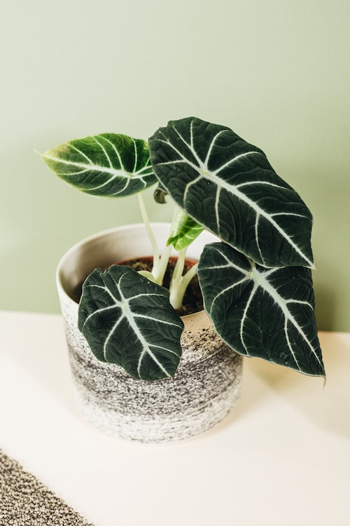

|  |
SITE SELECTION Genus: Alocasia Species: Reginula Family: Araceae Life Cycle: Perennial Country/Region Of Origin: East Asia, Indian subcontinent, and Malaysia https://smartgardenguide.com/alocasia-black-velvet-care/ |
|
DESCRIPTION The exotic and elegant Black Velvet Alocasia, also known as Alocasia reginula or Little Queen, has silver veins that shine against the broad leaf's dark, velvety background. The plant isn't so much demanding as it is specific. The dark leaves of the Black Velvet stand out, as do the prominent pale green, white, or silver veins. Its heart-shaped, thick, succulent-like leaves have a velvety appearance and a stiff texture. The leaves are approximately six inches long and two and a half inches wide. The Black Velvet is a rhizomatous perennial that stays compact, rarely growing taller than eighteen inches and wide. It goes stagnant in cold weather but can be active all year if given enough light and warmth. |